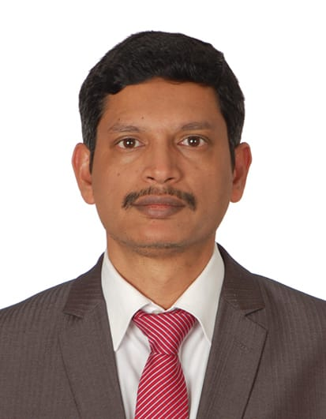

Resume_Nelson_Dsouza

Profile
Operations Leader with 22 years of overall experience and 8 years of Leadership experience in the BPO/ITES industry, skilled in Service Delivery, Operations & Team Management having ability to simultaneously manage multiple projects and schedules and ability to manage Client relationships in an on shore and off shore model
Education
B COM (HONS) MDS UNIVERSITY, AJMER, RAJASTHAN MAY 1997
Work Experience
BUSINESS DIRECTOR, SUTHERLAND GLOBAL SERVICES, NAVI MUMBAI MAR 2014-JUL 2020
- Project managed the Operations Transition of a Revenue Accounting process from Sutherland back to the clients organization (Insourcing) starting from Training to Operations steady state
- Effectively and efficiently managed the Team operations through appropriate task allocations to ensure the SLA’s are met on a daily basis
- Scheduled and Organized regular Internal Management reviews & Clients review meetings along-with submission of SLA Reports to Clients and Internal Management
- Scheduled Process & Soft skill trainings for Teams members to enable Retention and Growth
- Shared system & process improvements enabling efficiency and effectiveness of the Processes
- Setup processes to monitor daily booking of AP, AR, Expense entries and for ensuring Month end Accounting Provision, Reconciliation and closure activities are completed within timelines
GROUP MANAGER, WNS GLOBAL SERVICES, PUNE JUL 2002-MAR 2014
- Project managed in support with seniors the transition of Clients Operations to a new Revenue Accounting system i.e. Starting from system due diligence, UAT, Chart of Accounts setup, Production UAT & Training of Client users until Operational steady state was achieved
- Worked along-with Leadership to conduct a due diligence study & create a Consultancy report for a Revenue Accounting System provider
- Worked with multiple dept’s & Senior Leadership to finalize timely responses for RFI’s/RFP's
- Setup client meetings to finalize SOW and Process KPI's in support with Senior Managers
- Went beyond role to setup the Quality Procedure Document along with the Quality Manager
- Created Count sheets to manage productivity and incentives, Quality reports to enable accuracy reporting/trend analysis etc. & Training trackers to manage trainings
- Internal controls for Daily booking of AR, AP entries. Co-ordination with clients during Month end for Accounting Provision, Reconciliation and closure activities
CPA EXECUTIVE, PAMAC FINSERVE, PUNE APR 2002-JUL 2002
BOOK CONVERSION EDITOR, DIGITAL PUBLISHING SERVICES, PUNE NOV 2000-JAN 2002
- XML coding of Book structures
LOAN CLERK, THE J.C.C.S.E OF WRLY LTD., KOTA DEC 1996-MAR 2000
- Processing of Loan Applications
KEY SKILLS
- Ability to work collaboratively as part of a team
- Problem solving
- Attention to detail
- Communication skill
- Operations & Team Management
- SLA management
ACHIEVEMENTS
- Successfully lead 2 Projects to implement Revenue Accounting (RA) systems and setup RA operations in Client organizations
- Worked with Senior Leadership in finalizing a Consultancy report for a new RA system provider & thereafter lead a Project to setup the Client RA organization
- Successfully managed the system transition for 2 clients
- Successful management of client relationships ensured Projects always received positive feedbacks and a yearly CSAT score of 9 and above
- Successful Team management ensured positive employee feedback and ESAT scores
- Through effective overview and regular reviews of Process controls enabled 100% compliance of Internal & External Process Audits year on year
- With support of Senior Leaders managed the complete Operations transition and steady state setup of a Revenue Accounting Operations in WNS
- Convinced the clients to setup a Client R&R for staff through showcasing of effective management of the Process in WNS
- Consistently identified improvement ideas in Processes and Systems that enabled improve Operational Excellence and Process Controls
- Completed a Yellow belt certification that reduced the NP time from 25.1% to 14.5%
- Basis Performance nominated by Management to oversee the computerization of a cooperative society providing banking operations for W.Rly employees
Hobbies & Interests
Contact Details